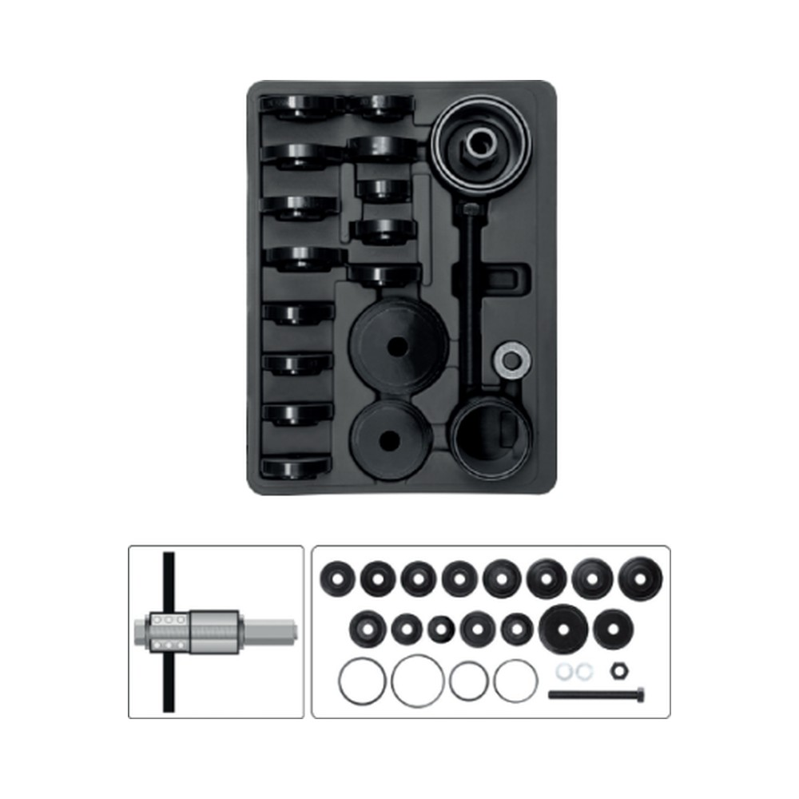

Con la mangueta ya fuera del auto, la forma más segura y rápida es con prensa hidráulica: no se golpea la pieza, no se dañan los asientos y el rodamiento nuevo queda bien puesto. Te explicamos los 5 pasos y qué herramienta se usa en cada uno.
Todo lo que necesitas para este trabajo. Precios netos + IVA, emitimos factura.
Dibujos en corte: gris = mangueta · azul = rodamiento · gris claro = masa.

Trabaja con tornillo y campanas: saca y mete el rodamiento de masa sin prensa hidráulica, en banco o en el mismo auto.
Ver producto · $175.890 + IVAEscríbenos y te mandamos la cotización con factura. Despacho gratis dentro de Américo Vespucio en compras sobre $50.000 + IVA.
💬 Cotizar por WhatsApp +56 9 4969 1686